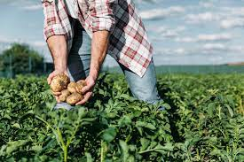
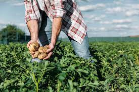
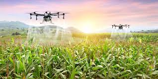
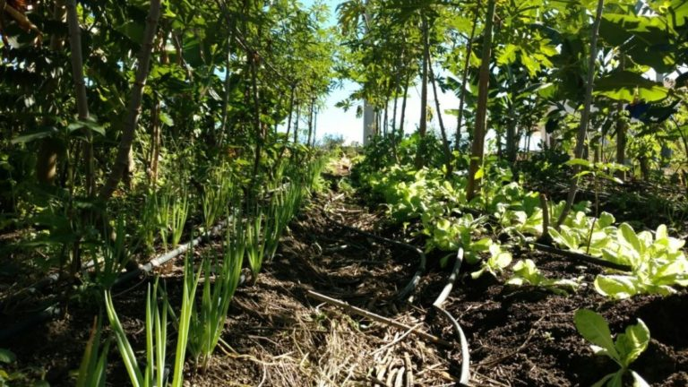

Agronomia Sustentável
A agricultura sustentável é um método de produção agrícola que visa atender às necessidades presentes sem comprometer as gerações futuras. É um sistema que busca equilibrar a produção de alimentos, a preservação do meio ambiente e a viabilidade econômica dos agricultores.
 

Dicas
Aqui você encontrará informações valiosas para aprimorar suas habilidades como agricultor. Compartilhamos conhecimentos sobre técnicas de cultivo, manejo de pasto, uso eficiente de recursos, entre outros.
Dicas
I.A Generativa
Um pequeno agricultor pode utilizar IA generativa para melhorar suas práticas agrícolas, como prever condições climáticas, receber recomendações de fertilização e manejo de pragas, planejar a produção, monitorar a saúde das plantas e aprender continuamente para aprimorar suas atividades.
Saiba mais


Modelo de cultivo eficiente
Nosso site oferece um campo de cultivos eficientes para pequenos agricultores. Com informações atualizadas e dicas práticas, ajudamos os agricultores a maximizar a produção, reduzir custos e minimizar impactos ambientais. Junte-se a nós e cultive com eficiência!
Saiba mais